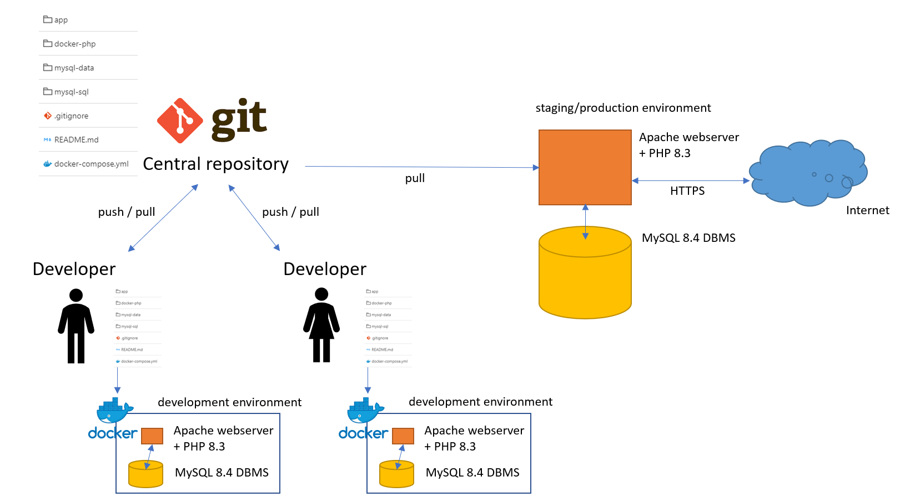
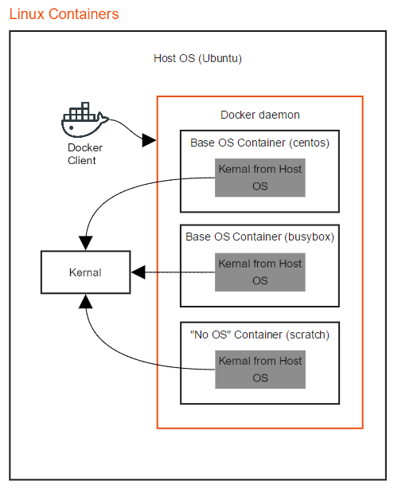
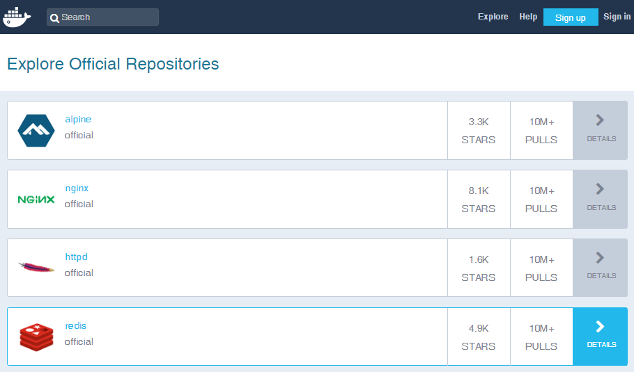
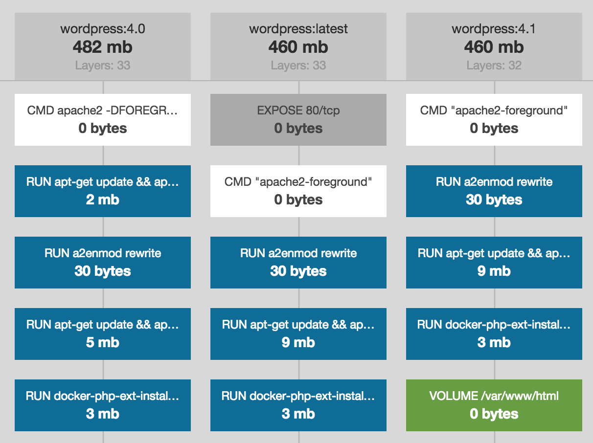
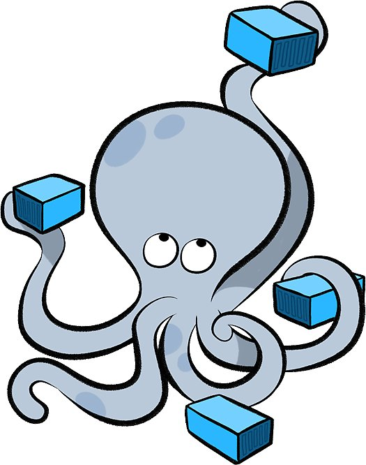

Back-end Development [OGI05w]
02. Docker
02.1
Introduction: Docker and virtualization
What is Docker?
- A tool that uses virtualization (yes like VMs)
- We will use Docker to create virtual server environments (for example containing a PHP-enabled web server and a MySQL DBMS)
- In Docker, such virtual environment is described by a bunch of text files, to be added to your project
- This bunch of text files generates everywhere exactly the same environment (reproducable)
PHP programming without Docker
But it worked on my machine
- When …
- developing in a team
- publishing your project on a production server
- handing over your project to …
- a customer
- your lecturer ;-)
- …
So why Docker?
- It provides a complete server environment out-of-the-box (no installation hassle) …
- … easy to share with others (no big files)
- Docker is pretty lightweight*
- Docker is popular
How we will use Docker

02.2
Docker basics
Architecture

Advanced version.
A (public) registry like Docker Hub stores Docker images anyone can use. These images can be copied to your system.
Images are blueprints (= read-only templates) of Docker containers. Containers are runnable isolated instances you can create, start, stop, … on the central Linux kernel.
With a Dockerfile you can create your own image.
Docker comes with a client-server architecture on you system, where the central server component listening for commands is called the Docker daemon.
Installing and running Docker
-
Docker - instructions:
- Docker Desktop for Windows
- Docker Desktop for Mac
- Docker Engine on Ubuntu
- Since 2020, Docker runs on any type of Windows 10/11 (through WSL 2). Read the instruction thoroughly.
Linux containers
-
Docker for Windows has multiple modes: Windows containers and Linux containers
- For the sake of compatibility → always use Linux containers
- Yes, Docker is running a VM on Windows (Hyperkit VM on Mac)

Docker Hub (1)
- Docker Hub is Docker's browsable registry of images
- Image versions (indicated by tags) are grouped into repositories

Docker Hub (2)
-
Let's explore …
- Explore: repositories ordered by # pulls
- Official images are curated by a dedicated team → use them !
- OSs like Alpine Linux
- Dev components like nginx*, PHP* and MySQL*
- Some images's configuration can be changed by overruling environment variables
- Any user can publish images in public repositories either by
docker pushor by automated builds (git hook)- Example: richarvey/nginx-php-fpm
Let's run a container
-
Get the mysql:8.4 image (if not present):
$ docker pull mysql:8.4 -
Create a new container:
$ docker create -e MYSQL_ROOT_PASSWORD=Azerty123 mysql:8.4
→ the daemon returns a container ID:950968d78d63ae451c178a46799cd85b6aed5d9692d46a6b3acca05da8830990- this steps reserves "the internal command" to run, which ports to forward, …
- ! each time you repeat this line, a new container is allocated
-
Start the container (in background mode):
$ docker start 950
→ you see? a unique ID prefix is enough
- All at once:
$ docker run -e MYSQL_ROOT_PASSWORD=Azerty123 -d mysql:8.4
Let's see what happened
$ docker images
REPOSITORY TAG IMAGE ID CREATED SIZE
mysql 8.4 5d4d51c57ea8 2 weeks ago 374MB
mysql latest f0f3956a9dd8 3 weeks ago 409MB
nimmis/apache-php7 latest 93b52d88eb58 6 weeks ago 482MB
alexcheng/magento2 latest 41b274b16771 7 weeks ago 1.43GB
phpmyadmin/phpmyadmin latest 19c3875df23d 2 months ago 104MB
mysql 5.6.23 0bd9ef0792fa 2 years ago 283MB
$ docker ps
CONTAINER ID IMAGE COMMAND CREATED STATUS PORTS NAMES
950968d78d63 mysql:8.4 "docker-entrypoint.s…" 20 minutes ago Up 8 minutes 3306/tcp confident_hermann
$ docker ps -a
CONTAINER ID IMAGE COMMAND CREATED STATUS PORTS NAMES
950968d78d63 mysql:8.4 "docker-entrypoint.s…" 20 minutes ago Up 8 minutes 3306/tcp confident_hermann
4f909c0d46e1 nimmis/apache-php7 "/my_init" 2 weeks ago Exited (0) 2 weeks ago youthful_rosalind
ec1702dd0e85 alexcheng/magento2 "/sbin/my_init" 5 weeks ago Exited (0) 5 weeks ago gallant_villani
c5d0d1270551 alexcheng/magento2 "/sbin/my_init" 5 weeks ago Exited (0) 5 weeks ago agitated_kowalevski
-
Actually we have been using a lot of shorthand commands:
docker image pull→docker pulldocker image ls→docker imagesdocker image rm→docker rmidocker container create→docker createdocker container ls→docker ps
Play and rewind
-
container *shorthands-
$ docker start [C](re)starts the container -
$ docker pause [C]pauses the container -
$ docker unpause [C]starts a paused container -
$ docker stop [C]stops the container (at first gracefully) -
$ docker kill [C]stops the container immediately -
$ docker rm [C]removes the container from your system - Replace
[C]by the container id (unique prefix) or container name
-
02.3
More about containers
The "internal command"
-
Inside images a default central command is defined, which is started when the container starts
- For
mysqlimages the command is:mysqld(the MySQL daemon) - For the
hello-worldimage the command is:hello(script outputting hello)
- For
$ docker run hello-world
Hello from Docker!
This message shows that your installation appears to be working correctly.
$ docker ps
CONTAINER ID IMAGE COMMAND CREATED STATUS
-
This central command can be overridden upon container creation
docker run -it php:8.3-apache→apache2-foregroundruns a webserver with PHPdocker run -it php:8.3-apache php -a→php -aruns a simple PHP interpreterdocker run -it php:8.3-apache php helloworld.php→php helloworld.phpinterprets helloworld.phpdocker run -it php:8.3-apache bash→ a bit weird … only runsbashof the underlying OS
Detached/attached and docker exec
-
You can start a container in
-
detached/background mode e.g.
$ docker run -e MYSQL_ROOT_PASSWORD=Azerty123 -d mysql:8.4- You don't have STDIN, STDOUT and STDERR of the container
- You have the prompt
$back
-
attached/foreground mode e.g.
$ docker run -e MYSQL_ROOT_PASSWORD=Azerty123 -it mysql:8.4- Without
-d*, Docker attaches STDIN, STDOUT and STDERR to the current console - when the (internal) command is interactive, you must use
-i* and-t* in order to attach a pseudo-TTY - when you exit the tty (Ctrl+C or close window), the container is stopped**
- Without
-
detached/background mode e.g.
-
With
docker exec, you can run a new command in an already running container$ docker exec -it 6d bash bash-4.4#
docker create|run reference
-
Usage:
docker create|run [OPTIONS] IMAGE [COMMAND] [ARG...]
[COMMAND]override the central command -
Some options (upon container creation)
-
--name test: assign a name to the container -
-v C:\Users\franky\configmap:/etc/mysql/conf.d: bind mounts a host folder into the container -
--expose 80: document which container ports are listening* -
-p 3307:3306: binds port 3307 of the host machine to port 3306 of the container -
-P: binds all exposed ports to random ports of the container (detect withdocker port) -
-e MYSQL_ROOT_PASSWORD=my-secret-pw: set environment variables** - and many others
-
-
Example
$ docker run -it -p 8080:80 --name demo-app -v /volledig/pad/myfolder:/var/www/html php:8.3-apache
Docker Volumes
- A container can store certain directories as volumes = on the host's file system (outside the container's file system).
- Volumes are defined in the image. Typically assigned to (changing) data directories.
- Very similar to bind mounts, but in a central store and better performance (read more)
-
Manage the volumes on your system
$ docker volume ls DRIVER VOLUME NAME local 2b3796f67db0fc84f2e1c9eaec9d8469cfa2700e7e02050bad1df897f502156e local 2f38450897fd11d5664b8c883650355a101c6f25e2c214b4b9058d222d2d641c local 3a1d620ebf6799ce11d7f7981e103a39dfdcd5610e65eaf962f390a7eafbbda0 local 3a26d6a7c846d562f578b09cba5292b080b8d7480159a5d1c5334f2b8108adec local 4ebec0e3543236847ccc8ec4f6f61143afa759b7aa8e8fc7c404e133e0153757 -
Indeed, they are not removed together with the container, unless you
$ docker rm --volumes
Save some disk space:$ docker volume prune
02.4
More about Docker images
Creating your own images
-
How does it work?
-
A Dockerfile is a text file containing a list of commands to build an image
FROM mysql:8.4 MAINTAINER Mahmoud Zalt <mahmoud@zalt.me> # Set timezone ARG TZ=UTC ENV TZ ${TZ} RUN ln -snf /usr/share/zoneinfo/$TZ /etc/localtime && echo $TZ > /etc/timezone COPY my.cnf /etc/mysql/conf.d/my.cnf CMD ["mysqld"] EXPOSE 3306 - Some instructions add to, others override the instructions of the parent image
-
Create the image locally by:
docker build -t mjoris/mysql-tz:1.0 .
→ expects a file calledDockerfilein path.
→ the image is built layer by layer - Publish your image on Docker Hub with
docker push(firstdocker login) or use automated builds with GitHub
-
A Dockerfile is a text file containing a list of commands to build an image
Image layers?
-
An image is stored in layers on your system
- Image layers are intermediate images stored as a diff on the previous layer
- Almost each command in a Dockerfile generates a new layer
-
Inspect an image's layers with
docker history - Layers are cached by Docker

UnionFS
- UnionFS is a filesystem enabling a union mount: file systems can be transparently overlaid and presented as a merged virtual file system (snapshotting)
- = the magic behind Docker's image layers
- Even a Docker container is a union mount of a Docker image
The Dockerfile
- Coding your own Dockerfile? Read the docs, look at examples and read about the do's and the don'ts (1, 2) Mainly, it's all about reproducability.
- Instructions (some introduction)
-
FROMdefines the image to start from -
RUNcommands to be executed when the image is built (each run ~ image layer) -
CMDcommand to be executed each time a container is started -
ENVdeclare an environment variable for the image -
VOLUME: container's directory to be stored on the host's file system, outside the UnionFS-system → to be used for data -
You can
COPY/ADDyour (configuration) files (at build time) into the image
-
Some examples
- Let's take a look at the following examples
-
Typically, Docker is used with more than 1 container at a time
- One task per container
- → multi-container environments
02.5
Docker compose
Multi-container environment (MCE)
-
There's a lot to tell about creating containers and making them work together manually
- By default, containers share the default bridge network - so we'll need to create a separate
docker network - You'll need to match ports, passwords, env variables and other settings manually
- Precaution if you have multiple MCEs, if you need to change a container, etc.
- By default, containers share the default bridge network - so we'll need to create a separate
-
Fortunately, Docker Compose exists
- CLI tool for running multi-container Docker apps in an easy way
- included in Docker for Mac & Windows
How does it work? (1)

-
Define your multi-container app in a file called
docker-compose.yml- The
services:section lists the images from which the containers will be built - Services starting with
build:will use an image from theDockerfilein the specified directory - Services starting with
image:refer to images to be pulled from Docker Hub
- The
How does it work? (2)
-
Build and start your app by running
docker compose up(add-dfor detached mode)- A Docker network is created when missing (network names = service names)
- Images/container are created when missing; containers are replaced when changed
-
Stop your app:
Ctrl+C(ordocker compose stopin detached mode) -
Remove the containers and associated volumes:
docker compose down --volumes
A simple example
docker-php/Dockerfile
FROM php:8.3-apache
RUN docker-php-ext-install pdo_mysqldocker-compose.yml
services:
php-web:
build: docker-php
ports:
- "8080:80"
volumes:
- "./app:/var/www"
links:
- mysqldb
mysqldb:
image: mysql:8.4
ports:
- "3307:3306"
volumes:
- "./mysql-data:/var/lib/mysql"
environment:
- MYSQL_ROOT_PASSWORD=Azerty123→ this is actually a simplified version of the MCE of the course slides
Some more examples
-
nanoninja's docker-nginx-php-mysql on GitHub (Dockerfile)
- 5 different base OS's running on the kernel, incl. phpmyadmin and composer
- nginx needs server like php-fpm for PHP code processing
- PHPDocker.io generates very similar MCEs
-
Laradock: an extremely flexible PHP development environment for Docker
- choose from almost 40 containers
- extremely well designed at the inside (Dockerfile)
- the
workspacecontainer is where you run any of your CLI commands (e.g. composer)